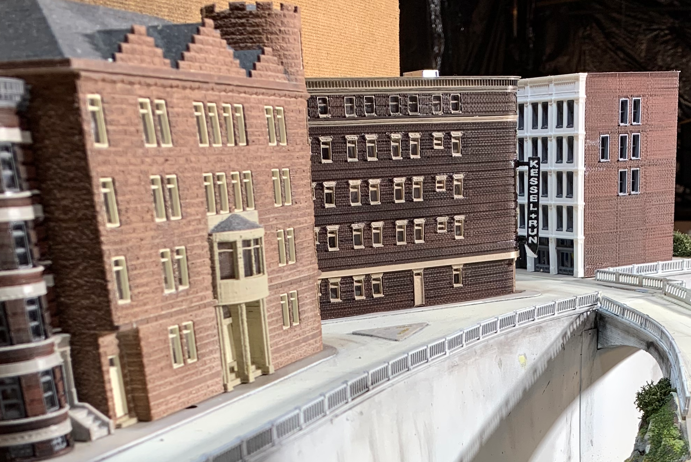

St. Rita Building
This page describes the creation of the 3D printed N Scale St. Rita building from start to finish.
Modeling
I want a significant structure that occupies a triangular lot at the intersection of two streets. I imagined a large “brown stone” building (with selective compression of course). The first step is to find a representative prototype.

Next, I measure the available space on my layout and 3D print a “footprint” not shown here. The footprint is a flat model corresponding to the foundation of the building to be designed. I often experiment with multiple shapes and sizes of footprint before selecting one that will determine the shape and dimensions of the final building.
When I’m sure I have the right footprint, the often long and sometimes frustrating task of designing the model structure begins. I use a free program called SketchUP Make. The last free version is from 2017. I use SketchUP Make as opposed to the free SketchUP web app because I need to be able to export my 3D models in COLLADA format with the .dae extension. In my opinion, there isn’t much point in spending a couple hundred hours designing models only to have them in a proprietary format like SketchUP’s native .skp format.
SketchUP Make is easy to learn and well suited for architectural style models. I wouldn’t use SketchUP to model trees or human figures or even landscapes, but it’s great for structures like bridges and buildings.
There are lots of tips and tricks for creating printable models. A few of the most critical model features are
- Don’t create any relief components that are narrower or shallower than you printer’s extruder nozzle and layer depth. In my case, the nozzle is 0.4mm, and I can print with layer thicknesses from 0.05mm to 0.4mm. I make sure every feature that “sticks out” is at least 0.41mm wide. Note: recessed model features like mortar between bricks can be much smaller than the print nozzle. The positional accuracy of my printer’s print head is approximately 0.005mm.
- 3D models need to be “sliced” into layers to be printed. I use the free Utilimaker Cura program to slice models. There is a brief animation of the slicing here. Most slicer programs require models to be “manifold”. Imagine your model’s walls are hollow, and you pour water into the walls. If the water could get everywhere inside the model without leaking out, the model is manifold. Making SketchUP models manifold can be labor intensive.
- Plan your model to print as several components that will be assembled and painted after printing. One reason is to make “overhangs” look nice. My printer does a good job of printing overhanging parts where the printer ends up extruding plastic over nothing but air. Nevertheless, the best looking flat surfaces you can print are the surfaces printed flat against the printer’s build plate. You can see the four separate component models for the St. Rita structure below. Another reason is to limit the wasted time and plastic when something goes wrong during a print. If your model takes 10 hours to print (like the full St. Rita structure), a problem that occurs 9 hours into the print can ruin 9 hours of printing. If each print session is 3 to 4 hours or less, the worst case will be wasting 3 or 4 hours.
- Make sure there is enough surface area for glue joints. When joining separate components, the greater the surface area of the joint, the stronger the finished model will be. With that in mind, it’s still possible to have tiny details like hand railings that are glued, but the result will be delicate/fragile. I can print parts that interlock with such dimensional accuracy and tight tolerances that glue isn’t always necessary, but I use glue anyway.
There are four model components for the St. Rita structure:
| Middle floors | Ground Floor |
|---|---|
 |
 |
| Roof | Windows & Doors |
|---|---|
 |
 |
Printing
There is a brief time-lapse video of the structure being printed. I print with non-toxic biodegradable PLA plastic. I can reliably print relief features that are 0.4mm wide, and recessed features can be smaller. There are some important considerations though:
- PLA can be difficult to glue because it isn’t a petroleum product and therefore is not solvent with most plastic glues. Plastruct Plastic Weld works well for me. It seems to be able to dissolve and bond almost any kind of plastic. Some people have success with “super glue”.
- PLA from different suppliers and even PLA from different batches from the same supplier can have wildly different melting points. Every time I start using a new spool of PLA, I end up determining good print temperatures through wasteful trial and error. I have PLA spools that print best with a 170C nozzle. The spool I use to print St. Rita uses a 210C nozzle temperature. I have a spool of black PLA that I don’t use anymore because it clogs my printer at temperatures lower than 230C. The color added to plastic can change the ideal melting point. Temperature is key because too hot produces a saggy stringy mess, and too cool causes layers to delaminate and nozzles to clog.
- Even though my printer can print 0.05mm thick layers, I almost always print 0.2mm layers. The thicker the layer, the shorter the print time. Thinner layers make the layers less perceptible in the finished print. 0.2mm is a good compromise for me.
Painting and Assembling
Here are the printed parts with the exception of a few printed doors and windows not shown.

You may notice a few stray “strings” of plastic. They are easily removed with a sharp modeling knife.
As a “boss level” trick, I have found that if I print adjacent parts with 0.2mm gaps, the parts come off the printer attached to each other, but the attachment is so thin that the parts can be separated by hand without a knife. Printing all of the windows and doors like that makes them less fragile and easier to remove from the build plate without damaging them, and they still have fine details that are only 0.4mm wide.
There is a lip along the top edge of the ground level component. The lip provides a large surface area for glueing. The tolerances are so tight though that the ground floor and middle floor parts don’t even need glue to stay together.
There is no back wall to the St. Rita structure because it is a “flat” that is positioned against the backdrop of my layout. I still model and print a bit of the back wall against each side wall to make the structure more rigid both during printing and after assembly. When printing large pieces, it’s a good idea to add supports or bracing for structural strength.
I paint the parts with inexpensive spray paint in two light coats. In this case, I use Almond Brown because the model is a brownstone building. I paint with a color lighter than the desired finished result because weathering darkens everything. If I start with a dark brown, the building ends up almost black after weathering.
Design Note: Some of my models have windows and doors integrated into the walls. The bay windows in the St. Rita model are integrated. However, printing the doors and windows separately makes painting and weathering much easier if you want the window and door trim to be a different color than the walls. I paint the windows and doors separately and assemble them after all paint has dried.

Weathering
I use black India ink diluted with water to weather almost all of my models. The ink settles into any texture on the printed parts. It makes the models more obviously 3D and accentuates details. For mortar between bricks, I use a wash of diluted white paint to settle into the mortar grooves and brush excess off the surfaces of the bricks using a dry brush before the paint has completely dried. If there is any unwanted white residue after the paint dries, another thin coat of weathering covers it.

The Result

Assembly is simple and goes fast once paint has dried. The windows fit snugly snapping into place and don’t require glue to stay in place, but I glue them anyway.